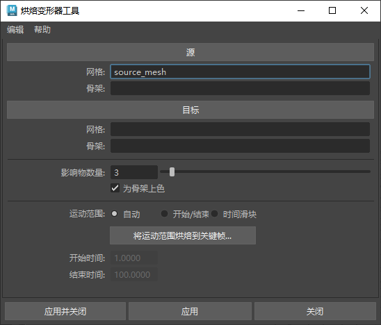

烘焙变形器工具(Bake Deformer Tool)
- 从“绑定”(Rigging)菜单集中访问：(Skin > Bake Deformation to Skin Weights)
- 在 Maya 命令行中输入 BakeDeformerTool。
可使用
烘焙变形器工具(Bake Deformer Tool)来近似计算任意变形器产生的变形，以便您可以将复杂的绑定导出到具有有限变形器支持的应用程序。此方法使用权重值的“智能”计算将网格绑定到骨架。
注： “烘焙变形到蒙皮权重”(Bake Deformation to Skin Weights)不会创建新类型的变形器，也不会修改源角色上现有变形器的结果。
有关使用此工具的信息，请参见在角色上烘焙变形器(Bake deformers on a character)。
- 源(Source)
- 指定要简化的角色。
-
- 网格(Mesh)
- 要烘焙的网格。
- 骨架(Skeleton)
- 要烘焙的骨架。
- 目标(Destination)
- 指定接收变换的对象。
-
- 网格(Mesh)
- 应用变形的网格。
- 骨架(Skeleton)
- 应用变形的骨架。
-
- 影响数量(Number of influences)
- 用于增加或减少每个顶点使用的最大影响数量。
- 为骨架上色(Colorize Skeleton)
- 启用此选项后，为绑定骨架及其蒙皮顶点上色，以便顶点显示与影响它们的关节和骨骼相同的颜色。
- 也可以通过“脚本编辑器”(Script Editor)中的脚本，在 bakeDeformer 命令上使用以下标志激活骨架上色：
colorizeSkeleton = true
注： 可以从(Display > Wireframe)窗口更改单个关节和骨骼的颜色。
- 运动范围(Range of Motion)
-
使用这些设置可定义对动画姿势进行采样的位置。默认设置为“自动”(Automatic)，此设置通过标准姿势运行绑定。如果要对姿势使用自定义运动范围，可以选择“开始/结束”(Start/End)或“时间滑块”(Time Slider)来设置要获取的姿势。
从以下三个选项中进行选择：
- 自动(Automatic)：选中此选项后，单击“将运动范围烘焙到关键帧”(Bake Range of Motion to Keys)会将自动采样姿势作为关键帧姿势烘焙到“时间滑块”(Time Slider)，您可以将其用作调整、添加或移除姿势的起点。使用此选项会将“运动范围”(Range of Motion)更改为“开始/结束”(Start/End)，并基于烘焙姿势填充开始/结束时间。
- 开始/结束(Start/End)：激活此选项可输入要从中派生姿势的自定义帧范围。
- 时间滑块(Time Slider)：从“时间滑块”(Time Slider)获取姿势范围。
- 将运动范围烘焙到关键帧...(Bake Range of Motion to Keys...)
-
-
将自动运动范围烘焙到已设置关键帧的姿势。